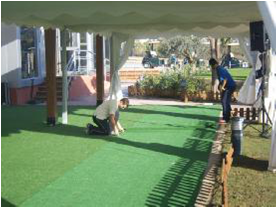
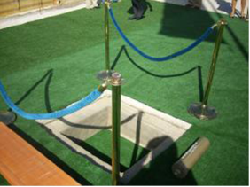
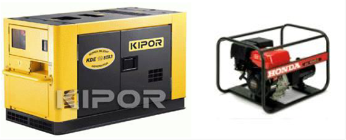
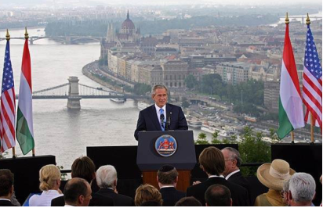
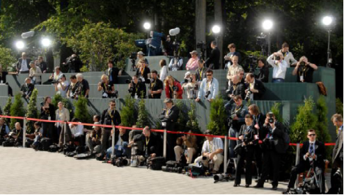

Los espacios naturales se están convirtiendo en lugares elegidos para realizar todo o una parte de muchos eventos, quizás porque el entorno puede ser canal conductor del mensaje o, por qué no, a veces es más fácil adecuar un espacio natural que uno fijo.
La producción en este tipo de actos, al igual que en todos, dependerá del contenido del mismo. Elegir un escenario al aire libre conlleva muchos riesgos para producción, al igual que para protocolo, el primero de ellos, las condiciones meteorológicas, lluvia y viento fundamentalmente y los problemas de luminosidad, pues no es lo mismo iluminar en un día nubloso que en un día de sol, y de ruido.

El estado del terreno es otro de los factores a tener en cuenta. Si ha llovido recientemente o lo contrario, si los invitados andan por suelo de césped, barro, tierra, o si el suelo está mal nivelado, o necesita limpiarse de matorral, o escombros etc., puede implicar un complejo proceso de remodelación, como pueda ser el necesario allanamiento y nivelación del suelo, cobertura del mismo con otro material, drenaje u otra circunstancia que requiere en muchos casos el empleo de maquinaria pesada. Con cierta frecuencia, la celebración de banquetes de boda se realiza al aire libre sobre terreno vegetal. Para este supuesto, puede ser suficiente con la instalación de una carpa si existe riesgo de lluvia o hace demasiado frío. Muchos banquetes se han visto deslucidos por el efecto de una lluvia normal sobre un suelo vegetal, como puede ser el césped, que no experimenta un buen drenaje del agua caída. El resultado final es un suelo blando, con barro, en el que se hunden las mesas y las sillas y los pies de los comensales, resultando muy incómodo para todos los invitados.

Es habitual en los actos de primera piedra limpiar la zona de escombros o hierbajos, nivelar el suelo, cubrirlo con zahorra u otro material, instalar césped artificial o enmoquetar parte del terreno para evitar que los invitados puedan tropezar o tener otro tipo de accidente o, simplemente para poder instalar una carpa en dicho terreno.
Las fuentes de corriente y tomas de agua también deberán tenerse en cuenta. Carecer de toma de corriente conlleva desplazar un equipo electrógeno, que en función de las necesidades, será de mayor o menor tamaño, y como mínimo, necesitaremos un vehículo de mayor tonelaje que un utilitario para desplazarlo al lugar.

Las dificultades de sonorización e iluminación, entre otras, son obvias, pero hay que tener en cuenta que la elección de un espacio natural, constituye en muchas ocasiones, una forma de dar mayor fuerza al mensaje, y si lo se contamina con cables, muchos micrófonos, tarimas desproporcionadas y otros elementos, el mensaje pierde fuerza, por lo que deberemos buscar el equilibrio entre escenario y espacio.

En función de la duración del acto, de la proximidad de instalaciones con servicios y otras consideraciones, tendremos que prever la necesidad de instalar sanitarios y zonas de descanso o avituallamiento o sencillamente, una zona donde protocolo pueda tener elementos necesarios como botellas de agua, vasos, etc. (zonas internas de organización).

Hay que considerar la asistencia o no de medios de comunicación ya que ello conllevaría equipamiento para dar sonido e imagen (si procede) o adecuación del espacio para realizar las separaciones oportunas desde el punto de foto.